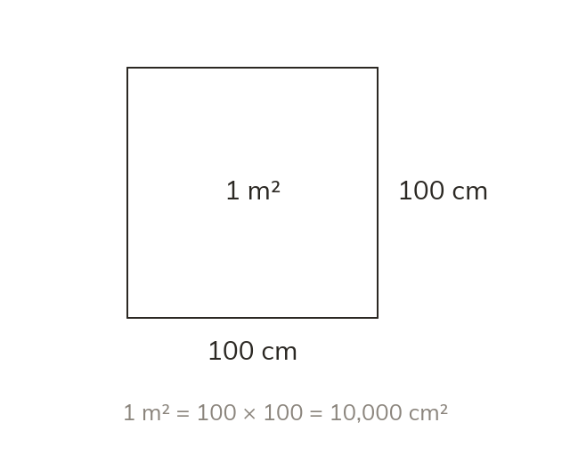
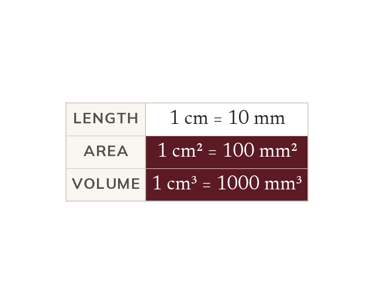
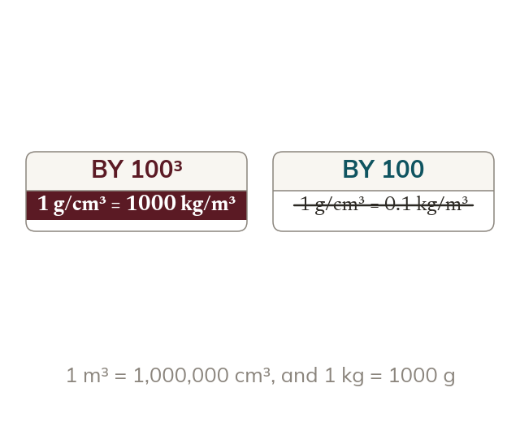
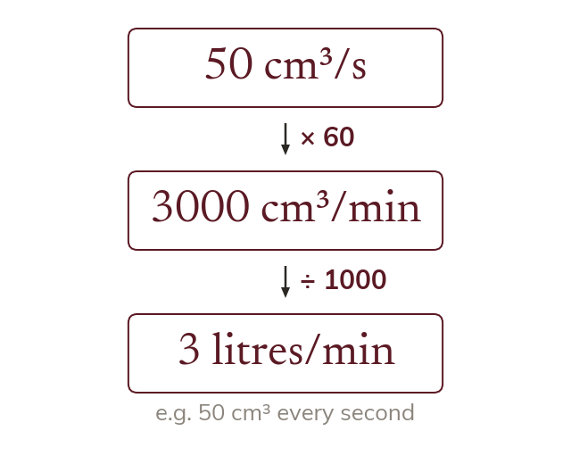

Area converts by the square
A square metre is cm by cm. So m² cm², not cm²
One metre is cm, so a square metre is cm by cm. Its area is cm², not cm²
Flooring is sold by the square metre, while plans are drawn in centimetres. Moving between them is a factor of used two or three times over.
Work down the page at your own pace. Write every answer in your book first, then click to check it.
Read each card, then follow the worked examples one step at a time.

A square metre is cm by cm. So m² cm², not cm²

Volume has three lengths, so the factor is cubed. So cm³ = mm³
Pick an answer. If it's wrong, the feedback tells you which mistake it was.
Read each card, then follow the worked examples one step at a time.

Each part of a compound unit converts on its own. In g/cm³, the volume part converts by a cube.

A rate's volume part and time part both convert. One litre is cm³; one minute is seconds.
Pick an answer. If it's wrong, the feedback tells you which mistake it was.
Finished? Next lesson: 10H.11.1 Calculating with Decimals.
Log in, then search for a code to practise that skill.
Videos, worksheets and more on each part of this lesson.